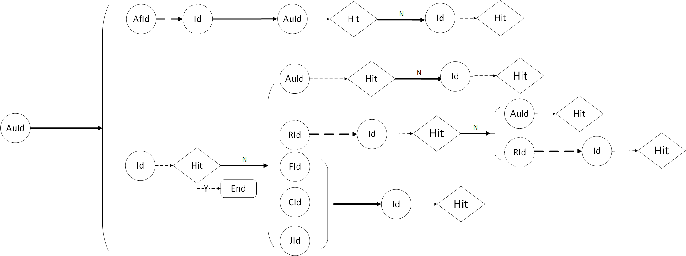
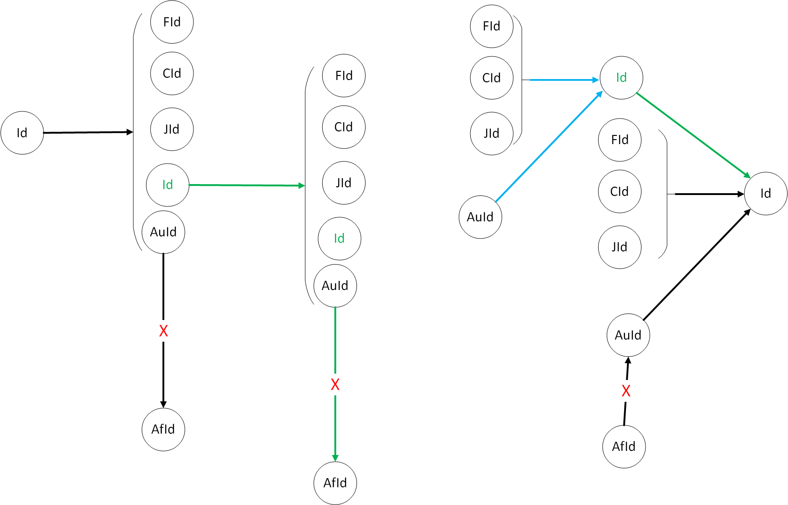
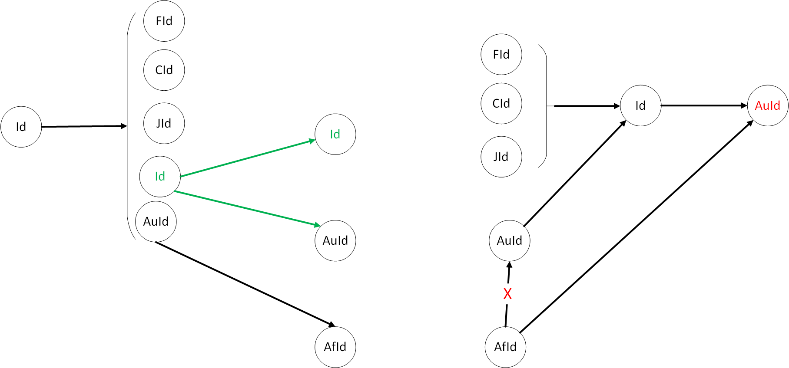
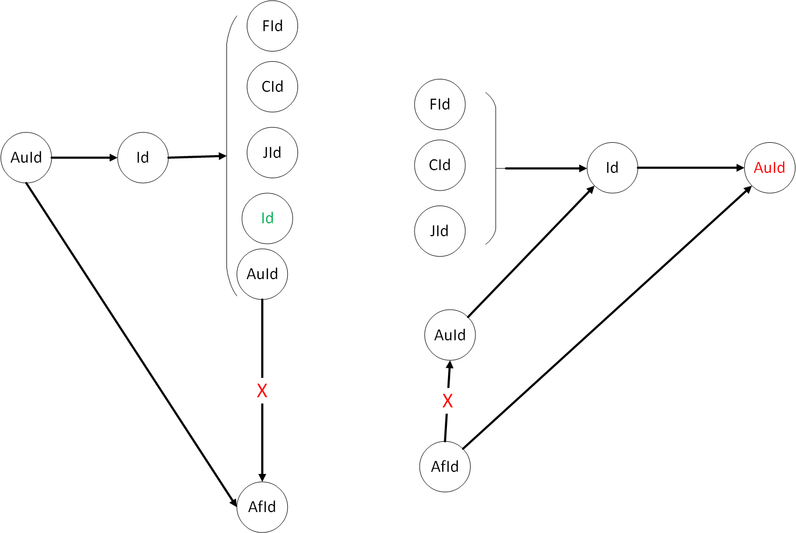

编程之美复赛总结
上周参加编程之美复赛，在和两个小伙伴的共同努力下，最终复赛取得了第22名的成绩，很遗憾没有进入决赛。但在这次比赛中，也学到了许多东西，在这里总结一下。
赛题介绍
Microsoft Academic Graph (MAG) is a large heterogeneous graph containing entities such as authors, papers, journals, conferences and relations between them. Microsoft provides Academic Knowledge API for this contest. The Entity attributes are defined here.
Participants are supposed to provide a REST service endpoint that can find all the 1-hop, 2-hop, and 3-hop graph paths connecting a given pair of entity identifiers in MAG. The given pair of entity identifiers could be [Id, Id], [Id, AA.AuId], [AA.AuId, Id], [AA.AuId, AA.AuId]. Each node of a path should be one of the following identifiers: Id, F.Fid, J.JId, C.CId, AA.AuId, AA.AfId. Possible edges (a pair of adjacent nodes) of a path are:
For each test case, the REST service endpoint will receive a JSON array via HTTP with a pair of entity identifiers, where the identifiers are 64-bit integers, e.g. [123, 456]. The service endpoint needs to respond with a JSON array within 300 seconds. The response JSON array consists of a list of graph paths in the form of [path1, path2, …, pathn], where each path is an array of entity identifiers. For example, if your program finds one 1-hop paths, two 2-hop paths, and one 3-hop paths, the results may look like this: [[123,456], [123,2,456], [123,3,456], [123,4,5,456]]. For a path such as [123,4,5,456], the integers are the identifiers of the entities on the path. After receiving the response, the evaluator will wait for a random period of time before sending the next requests.
赛题分析
简单总结：赛题的核心问题在于，寻找从给定的起点到给定的终点的路径。其中起点和终点可以是论文Id或者作者AuId,路径中的节点间指向关系如上图所示，路径的长度为小于或等于3。
初始阶段
初始阶段，我们我们试图从起点开始，根据图1的节点关系从前向后拓展，直至找到终结点或跳数超过限制。这是一种“大一统”的算法，如果存在可行方案，当跳数限制修改时，此算法仍旧实用。为此我们绘制了如下状态转移图（由于时间有限，图中可能有某些细节存在问题）：

经过初步设计，我们根据这个示意图编写出了第一版的代码，然而跑出来的结果却让人很不满意，有些测试用例根本没有计算出结果或者计算超时。于是，我们开始讨论原因以及解决方案。
主要原因：当我们以id或auid为查询条件查询时，获得的数据量并不大，但当我们以FId(研究领域Id)、JId(期刊Id)、Cid(会议Id)为查询条件时，获取的数据量确实巨大的。大到我们根本无法处理。所以才会出现无法继续探路的情况。
解决方案
从两端出发，而不是单纯的从一端出发，即从start和end同时向中间汇聚。不去进行FId、JId、FId的查询。
进阶阶段
根据从两端出发的指导思想，以减少请求次数为设计目标，分别为Id-Id/Id-AuId/AuId-Id/AuId-AuId四种情况进行了如下设计：



经过这次设计，整个思路就非常清晰了，自然程序也就水到渠成。
项目工程和管理相关内容
项目架构
- RESTFul架构：选择SpringMVC框架作为RESTFul架构实现方式。
- JSON解析：FastJSON
- Http请求：Apache HttpClient
- Web服务器：Tomcat
- 项目构建：Maven
项目优化
- 多线程优化：采用CachedThreadPool线程池对程序优化，实验发现，CachedThreadPool要优于FixedThreadPool。
- Http请求优化：这部分有所欠缺，由于疏忽，这部分并未进行优化，可以建立TCP长连接，以减少连接创建消耗。
项目成员交流相关内容
- SVN：进行代码同步
- OneNote：进行文档同步和交流
- WeChat/QQ：进行即时通信
项目代码
项目总结
- 盲目设计、盲目开发：在比赛开始阶段，对赛题分析不够清晰，浪费了很多时间。比如：根据FId查询会产生大量无用结果，这个问题，可以通过简单的测试就可以发现，但我们在初期并未察觉。
- Just do it：原本在项目开始时，我们就意识到请求连接部分就是一个优化内容，但由于我们后期的疏忽，直到比赛结束我们也没有实际进行优化。
- 团队精神很重要：感谢两位小伙伴。比赛过程中大家一起讨论问题，一起解决问题，相互激发灵感，优势互补。
比赛结束了，遗憾的是没能进入决赛，幸运的是认识了两个小伙伴，并在比赛中学到了许多东西，蛮好。
Never give up! Be more confident!